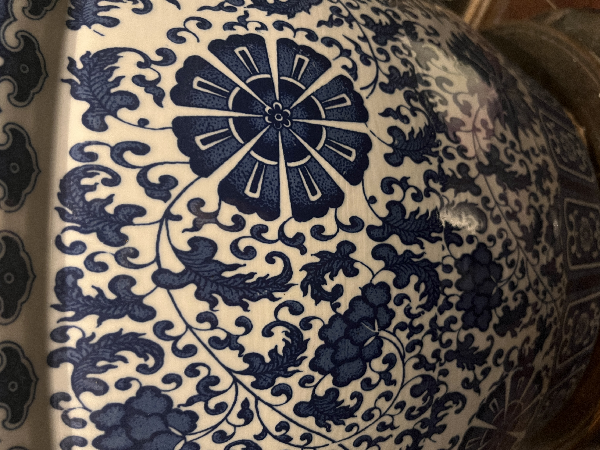

Pattern Blog
This blog comprises journal entries based on my experience with everyday patterns. My thesis hopes
to
investigate the psychological affinity and emotional effects of patterns on humans. By doing so, I
use
psychological strategies such as attention and emotional theories, Cannon-Bard and James Lange's.
This consistent repetition of photographing, sketching, and reflecting allowed me to discover
alternative
ways to look at patterns and myself. This process interests different perspectives we superimpose on
designed artifacts and how creating/selecting describes us. As such, design is a cycle of
repetition,
like
patterns.
Oct 9, 2024
So many swirls that makes it busy looking.
The colour brown or beige makes it dull. Why?
Maybe it’s because of the same tone that is not contrasting enough. The dark versus light shades are
different. The swirls fill up the space, making it overstimulated. Feels my energy spread throughout
the
chest area. A swirly florally like pattern of vines in brown and beige combo similar to ink
blotches. I
feel this tension within my chest. Anxious, lost on where to look. I feel my eyes going up and down.
The
little details of the brush makes me feel super itchy. It seems outdated and ancient. It captures
the
maximalist carpet look.
Oct 9, 2024
Flower prints bloom, spread out, water-colours, 3 block colour: orange, white, green, and lots of white
space. My initial feelings were relaxed? Because of the pattern or is it because it is in the context of
my room where I sleep? Breathable with white space to digest. Feelings come from the head. Focus is on
one spot which is at the flowers. I feel warmth within the colours. My eye changes, hopping around from
one place to another. I feel an unfolding sensation, the water colours send a chilling feeling. I find
the water colours to be relaxing and raw in nature. It is authentic and incomplete but the texture and
spacing is cold and sparse.
Oct 15, 2024
Mesmerized by the spacing and contrast in the pattern. I zone out within the space. I felt calm and
centered, looking at the middle. Almost like I am contained and united in this circle and grid
structure. The colour was brown and beige, giving a warm and cozy sensation. It is a flat 2D surface,
with nothing more to look into, like a wall.
Oct 15, 2024
It was a wood arrangement piece.
Walking into the Chinese buffet, I felt my energy at low. The atmosphere of the location did not excite
my anticipation for food. It was a dull and outdated design that is darkly lit, almost abandoned. The
strokes on the wood interlocking with different shades of brown resembles burnt firewood. Captured this
pattern within my position. It establishes a cultural touch with Chinese heritage. Red is an important
colour for luck and prosperity. The wooden materiality, I would assume, has a raw authenticity of
China’s upbringing. The random strokes of lines caught me off guard. While the wooden logs are organized
in a grid, its contents add a layer of texture. I feel a bit conflicted. My eyes move up, right, down,
left. Looping in a circle. Disrupting flow to shift in different directions. Mismatched coloration,
random holes. As a whole, it intrigues my mind. A pattern is ordered but the wood’s graining is
randomized. The holes, I wonder what are they for? But their addition led me to feel like I’m going in
circles. Like I am stuck in a loop, with these little holes that will soon turn into bigger problems.
Unstable was the feeling.
Oct 16, 2024

Walking in, I felt welcomed and enticed with the space. These repeated floor tiles illuminated with two
distinct shapes. Encapsulating negative and positive space. How do I feel? It was refreshing. Symmetry
kept my eyes more up-down or right-left. It seems that this was made using one charette. On the gray
motif, I’m drawn to see from the inside moving outwards. I feel this internalization of depth within my
heart. I feel faced with something I don’t want to stare at for too long. I find myself jumping from
black to black. I feel something unraveling in my heart. My chest. Pulling myself into different
directions. Symmetry is beautiful but scary. Maybe it’s the choice of colours. Something about
perfection seemed off-putting.
Oct 16, 2024

I spotted a pile of rocks.
As its sole purpose was to take up space, I find something within its pattern somewhat freeing. It was a
pile of jumble. But I felt like I was that jumble. My eyes move across the pattern. I felt confused, but
freeing. Almost like I can sense my energy flow between the crooks of rocks clashing into each other.
Following in streams, I find myself going through a journey. A mixture of shapes, textures, and
arrangements that collide together. Stimulating all places of my brain. I feel it pulsating. I feel
maybe overstimulated by looking through its nooks and crannies, making me split my energy everywhere.
Oct 17, 2024

The edge of the buildings had a pattern of bricks arranged in a staircase. Normally, I wouldn’t bat an
eye on this but right when I exited the vicinity, my foot felt the difference in height. I looked down,
I felt a ding sensation.
An alert!
I stepped on uneven surfaces. Growing up, I hated the feeling of these bumps and edges on the sidewalks.
It gave me such a disgusting feeling to feel something below my feet. The same I felt stepping on this.
As I looked at the pattern as a whole, I saw a staircase arrangement framed with vertical bricks. My
eyes were drawn by the flow of each line. Looking at it, I feel neutral. But following the lines felt
like shifting my energy from my chest to my head or down to my chest.
Oct 18, 2024

Enamored by the illuminated warmth of yellow, I gravitated towards the lantern like a moth. The
radiating pattern reveals a depth of branches and simple splotches of red and orange that reminds me of
autumn leaves. The frills coming out of the branch divided my attention, finding difficulty to focus on
the little details. My eyes bounce from splotch to splotch. It was a mix of overstimulation and skipping
stones with simplicity.
Oct 18, 2024

I spotted a plant behind my seat at the same restaurant. Leaves sprout in opposite directions. They are
big at the beginning and slowly become smaller as I draw my focus to the tip. I feel my energy become
sharper. Since the size of the leaves requires my eyes to view from big to small, my attention holds on
a bit longer. I sense the familiarity and comfort of how relaxing I feel from feeling the ground up. It
was a pleasant experience to look closely at. Perhaps nature was always connected to relaxation that
influenced my perception.
Oct 19, 2024
An interesting texture on a wall. I saw the metallic rust brown. It caught my eye. On the light that
shines upon the embossed surface. I paid attention to the circle first. It points to a center. It is
symmetrical and beautiful. I resonated deeply with the depth of colour, surface, and direction. I felt
like I was facing something ethereal. Perhaps it’s the metallic shine. The grid structure gives a sense
of stability. It overpowers, forcing my eyes to follow through. Little floral motifs added a touch of
life in contrast to its material.
It was inviting and warm.
Oct 20, 2024
Entering a bright orange cage, I noticed the black and white flower pot pattern on a window corner. It
stood out as I found my eyes moving horizontally, focusing on the direction of the middle row. Geometric
lines that go in zig zags created a playful atmosphere. I feel positive, up, and happy! I could imagine
my heart beating in tune with the nature of these lines. It was a sandwich of conveyor belts. It felt
like the pot was handmade with textured paints. The pattern brought out the fun in something that can be
hand-made.
Oct 20, 2024

The gold colour struck me the most. On how bright, bold, and warm, it lured my eyes to look even
closely. My eyes flicker between silver and gold. A repeated, complex motif. I felt positively
stimulated. For the level of detail, I needed to stay longer to actually feel the pattern. It felt like
an obstacle. My brain felt like solving a puzzle of its own. You would see one motif but there are two
within the negative space. A discovery. So interesting and satisfying to find the difference. It was at
the top of my head. A knot? A sensation that wrapped around my mind.
Oct 22, 2024
I immediately captured this ceramic cactus as I immediately thought it looked so cute. Oh! A cute
ceramic cactus with circles popping out. I felt attached already with “cute.” Oddly it felt soothing to
see bright yellow bulging out of the green exterior. Glossy and ordered within columns, I find my eyes
following a vertical direction. I felt the urge to pop or touch these little balls!
Oct 22, 2024
Lines moving towards the center.
I felt an “itchy” sensation in my brain.
Calm and intrigued, I spent a short time looking.
Oct 23, 2024
This caught my eye walking to Richmond St.
These rectangular motifs scattered with my eyes looking from bottom to top. One with the most density.
An opaque window reflecting light, I was interested in how these shapes in its angle created
perspective. In opposite directions, short to long rectangles, my eyes divert looking at zig-zag
columns. The pattern added a sense of character to the window. Something like movement and life, I can’t
look at how I look when I walk.
Oct 25, 2024

Why rain?
I stared at the blank concrete canvas. Droplets fall from the sky. My eyes shift as I watch where each
landed. I felt so engaged and almost meditative to focus on this act. Overall, it was a soothing
experience. The pattern became small to a whole entity. Engulfed by its perpetrator. I sensed
fulfillment and a deep sensation of sentiment in my heart. Perhaps rainy days aren’t the best memories I
had. It was mind-opening to see new forms unveiled in front of me.
Oct 26, 2024

The colour itself spoke out to me.
Checkered red. Reminds me of a retro diner in the 90s. A classic and straight forward checkered pattern.
I like it. Even with the brand’s aesthetic, it calls for fun and cheerfulness.
A comic, racing, picnic.
This checker can be used for many things I could think of. Viewing this aesthetically, my eyes divide
when looking at its parts.
As a whole, it looks like background noise.
I can’t focus closely at all. Feels overstimulating. Reminds me of when you zoom in too close into a
Photoshop file, it gets blurry and pixelated.
Oct 26, 2024
Out of all the patterns on this Japanese sticker sheet, the geometric ones stood out the most to me.
Why?
It is strong, structural, and bold. It demands my attention. Crystallized stars when viewing its forms
reveal other forms from negative space when shapes are closer together. Layer upon layer. This is
infinity. My eyes are drowned with endless possibilities. There are x and y planes going in 2
directions. I find myself jumping from the centers of each shape.
Oct 27, 2024

From a whole selection/row of clothing, I instantly saw or even picked this black and white arrow
pattern. I loved the colours. I’ve been wanting a sweater with a touch of knitting. These arrows led me
to look from the ground up. I was captivated by the different techniques of each arrow. One seems to
alternate between black and white. Others are filled with white. Specifically, the alternating shades, I
was strongly engaged within. Stimulating with awe, it brings out another dimension, another layer. I
felt intrigued but I thought I wouldn’t know how to style the sweater, so I put it back on the rack. Did
I not buy it because of how others would perceive me?
Oct 29, 2024

I don’t usually notice this but compared to my old shower curtain, this one was very frustrating to look
at. Not only are the patterns scattered with shades of gray. I CAN’T SEE. It makes the shower appear so
dark. How can I shower when I can’t see the shampoo and conditioner bottles!? It does look pretty
though. I wish there was colour. It lacks liveliness. I find myself particularly interested. I see each
square is repeated “randomly,” there is no order. Amongst finding that same motif, I keep track of one.
The one I drew and this one here. It’s like I always end up finding these ones across the grid because
they caught my attention. I feel they have a focal point that directs my eyes to instantly spot them.
Oct 31, 2024

Free flowing lines remind me of the sand on the beach. The depth within the shadows allows easy
processing. From left to right, I feel my heart calming down. In sync with the lines, my breathing
follows through each rhythm unconsciously. I feel my brain aching. Throbbing. I am mesmerized by such
simplicity.
Nov 2, 2024

The use of negative space for this divider decoration was really cool. I could see the window and
background in the holes. Although, the pattern itself evoked an “oriental” pattern. Similar to Japanese
patterns. It is simple, clean, and bold. I feel immersed in the bold gold hexagon. Lines connecting
these hexagons demonstrates a level of intricacy and complexity. It gives me the room to breathe within
my viewing experience. I felt whole.
Nov 2, 2024

This might not be a pattern but it was really electrifying to see these lines on my way to the Go Bus
station at Union. It is both stimulating and energizing because of the lines and dynamic changes of
height between the lines.
Nov 3, 2024
I captured the wall because I saw a glistening shine. The pattern is subtle and quiet. I silently try to
examine these hexagons to its whole. I only could see a fragment because of the light that shines upon
its surfaces. The wood surface follows parallel to the direction of the lines that enclose them. It’s
illuminating. Shiny. Hexagons in hexagons. It is plain, but stands out due to its materiality. Wherever
it shines, I go. I follow the light as I try to piece them together. If it was just the wood as a
pattern, I would not have been intrigued. The thin shiny lines glowed so subtly.
Nov 5, 2024

Another use of hexagons grouped in a honeycomb composition. North, south, east, west black hexagons
surrounding the white space. My eyes look at the big blob of white space. Feeling nothing. Literally
nothing. Just stuck in space. When lost in space, I see the black hexagons come forward into my vision.
Blurred. Only they can clear the lines between the white hexagons.
Nov 6, 2024

Out of all the patterns that are overlapping one another, I particularly found this one to be most
familiar. Reminds me of a Chinese porcelain clay design. Blue and white. It’s calming to look at the
flower motifs. Refreshing to look at in the city area. Not too loud. Mesmerizing qualities of space.
Elegant that says “do not touch.” Eye direction to follow each swirl.
Nov 9, 2024
This is a Thai weaving pattern with the use of gold and red. Gold is often used in temple murals to
dedicate the role of Buddha. I recently went on a trip to Thailand for a cultural exchange. It was
amazing to relive the experience in this restaurant. The motif is a cultural motif and I perceive a
shape of an elephant. However, it may be something else. Its texture imitates weaving patterns with
abrupt rectangular rows. I feel a sense of importance, prestige, and an overwhelming pride of a cultural
identity.
Nov 11, 2024

I saw this pattern and thought I had to analyze this. I laughed when I immediately recognized the
leopard skin, while my friends thought it was a cheetah. Their first reaction was how gross the print
looked. I laughed. I thought it was amusing, playful, and innocent. Looking too much at it makes my head
hurt though. I find my eyes scattered throughout in its simple duo colour palette. I often recognize
these animal patterns for kids parties, which leads to this nostalgic feeling within me. I find it
harder to focus on small prints versus big splotches. Almost like I’m zooming in.
Nov 12, 2024

A flower pattern where there is a dark band of navy with white-petaled flowers wrapped around the bowl.
It emits an atmosphere of elegance and organic with its glossy finish and natural appeal. I feel myself
resonating deep into the navy blue swamp. My heart sinks. Staring into each flower, it appears heavy
looking. I am once again reminded of my cultural heritage of porcelain designs. Filled with depth, I
feel myself floating in the deep navy sea.
Nov 13, 2024

Dark and light gray rectangles arranged diagonally to interlock with each other. Reminds me of braiding.
It appears strong, unified, and plain. I don’t like how boring it looks. I find it contradicting that
the dark side is fighting against the lighter side. My left and right brain feels a sort of imbalance in
weight. I view light colours with minimal need for attention, which is less work.
Nov 18, 2024

Immediately, I noticed the blue and white pattern! It was so familiar looking because my family owns
Chinese porcelain clay vases. The pattern on the notebook is called Toile de Jouy. I researched this
pattern before where it is the European’s interpretation of East Asian culture. As a whole, I thought it
was an Asian pattern. Looking closely, it shows a narrative of everyday life. With nature, people and
animals, it depicts a glimpse of freedom. To me, it is cherishing every little thing that surrounds me.
I could breathe easily and find a natural flow (like a river) as I checked from one place to another.
The amount of detail and cross-hatching textures brought out a level. In a sense, this brings a
luxurious atmosphere of something “precious” and elegant. Perhaps, it is my cultural background that I
see as a symbol of pride in my Chinese identity. That it is important and historical to me. It requires
close attention. Especially when I see myself staying at one spot for a prolonged time.
Nov 20, 2024
The table had white splashes in a chalk-like texture scattered across its surface.
It was very messy and unappealing.
It reminded me of the untouched remains of spilt milk. Each splash was nerve-wracking to look at. It
stimulates my head unpleasantly at the very top. I wonder why this cafe chose this as part of their
interior design. I was very fixated and agitated by this messy sight. Every little mark on the table had
my eyes twisting. I became so distracted and unorganized that I did not touch my work for 20 minutes. In
the end, I constantly find myself trying to wipe something that isn’t there.
Ahh, so frustrating!
Nov 21, 2024

After seeing the Toile De Jouy pattern at Staples, I thought I should capture my pottery at home. This
is what I see everyday when I enter the living room. It is so familiar. I would know I am at home
whenever I see it. It gives me a sense of comfort and familiarity that I am in a Chinese-owned home.
Often overlooked, I examine closely this time to see how I feel when staring closely into the vines. I
feel happy as my heart swirls. Almost as if the pattern itself helps embrace me and my identity. A big
hug and appreciation to my cultural ethnicity.
Nov 23, 2024

This pattern is so iconic!
Especially in Dim sum restaurants. If I see this pattern separately by itself, I would automatically
recognize it is for Dim Sum places. Under the light, the swirls shine the brightest. It is spacious and
intentional through its stroke weight. It is overlooked by many but it adds a natural and organic
appeal. Dim sum is shared amongst family. The fabric seems to connect everyone together with food placed
on top. It brings me warmth and happiness. It completes the overall experience of sharing food with
loved ones. I find myself in an infinite loop. I view the vines in a continuous cycle, in a circle, my
eyes not stopping to take a break.
Nov 23, 2024

What stood out to me the most was the overlapping foliage. Some green, blue, beige, and horizontal blue
lines. The colour palette was unique and pleasant. It looks like there is a hierarchy amongst the
colours. The blue pops out towards me. And then the beige is hiding in the white background. With so
many different types of elements and textures, I find the pattern pleasant. I can’t look into detail but
as a cohesive whole, it feels very explorative. I like it a lot. It is stimulating to look at and it’s
fun to jump from one place to another. I feel a split attention. One side looking at the foreground
while feeling the buzzy noise in the background.
Nov 23, 2024

The carpet looked like a horrific disaster. It was like witnessing an actual crime scene. The victim’s
blood was leaking and staining the entire carpet. The vibrant red attracted my attention like a curious
hummingbird. Staring deeply into the pattern, its materiality simulating weaving attributes makes the
entire piece look glitchy and distorted. I sense a level of confusion and frustration within myself. The
little grainy texture makes me squeamish. If I look for too long, I will vomit. A physical sensation of
disgust overwhelms me, causing me to glance away.
Nov 24, 2024

From these forms alone, I felt like I was in Antarctica. The use of blue to gray colour palette evoked
the chilly atmosphere of the North pole. I find this pattern to be calming, as if I was taking a stroll.
I allowed this path to lead me wherever it takes me. I see a majority of blues, my eyes avoiding to meet
the gray platform. I felt at peace studying in this space. I was satisfied and grateful to have found a
place like this. I feel that I process light colours more easily, than a deeper and darker colour that
requires time for contemplation. As a whole, I feel my energy dispersing into many avenues. Almost like
it’s leaking out. All I can say is, “this is what going with the flow” would look and feel like.
Nov 25, 2024

One glance and I knew I had to take a picture of this pattern! Although it lacks colour, the shapes and
forms truly brought out this sensation of attachment for me. The layering of circles added an element of
surprise as I see star shapes coming out of the negative space. The simple pattern is so mesmerizing to
look at. It gave off a touch of elegance with its transparent parts to reveal the stores’ interior. It
was inviting to look at. It was friendly and fun. My eyes stare in the direction of the columns. It was
easy to process with fluid and smooth movements.
Nov 26, 2024

These dots in a grid structure reminded me a lot of street tactile pavings. It works well functionally
and aesthetically, delivering an industrial mood. The space was cozy and warm. A small, retro spot to
eat in a dark autumn afternoon. The pattern evoked nostalgia for me. Perhaps the weather had some
influence, but I feel like I’m reliving my childhood. The bright outlines of circles popped out to my
attention and immediately I was playing a game of connecting the dots. It was fascinating to reflect how
I jump from places and ignore the brown circles in the background. I thought this exercise was fun and
uplifting, resulting in a positive mood.